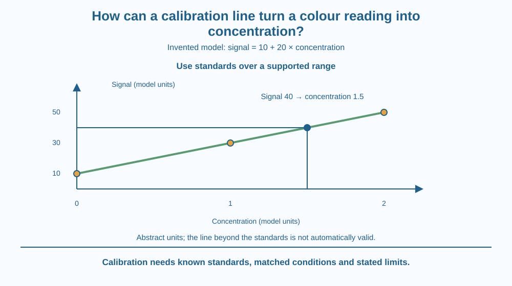

Use known standards to relate a measurement signal to concentration over a stated range. Distinguish calibration from a blank and from direct visual guessing. Interpret an unknown by interpolation while recognising that an attractive straight line is a model with conditions and limits.
A coloured sample produces a device reading of 40. Without a reference, that number might be only an arbitrary signal. It does not automatically mean 40 concentration units or twice the concentration of a sample reading 20.
Known standards can establish how the response behaves. In a simple invented system, zero, one and two concentration units produce signals 10, 30 and 50. The nonzero starting signal changes how an unknown should be interpreted.
Calibration supplies the missing link between a response and the quantity being estimated.
A standard contains a known amount or concentration of the target under specified conditions. Measuring several standards provides paired values: known concentration and observed signal. These pairs support a calibration relation.
In a simple linear model, signal changes by a fixed amount for each concentration increment. The invented standards here give a slope of 20 signal units per concentration unit and an intercept of 10 signal units.
The intercept represents the model response at zero target concentration. It could include background in this example. Ignoring it would create a wrong proportionality: a signal of 40 is not simply twice the concentration associated with a signal of 20.
For the invented relation, subtract the intercept and divide by the slope. An unknown signal of 40 corresponds to 1.5 concentration units. The result is an interpolation because it lies within the range covered by the standards.
Extrapolation uses the model beyond that range. A device can saturate or the chemistry can respond differently at higher concentrations. Extending a straight ruler line indefinitely is not evidence that the real relationship stays linear.
The standard and sample should be measured under appropriately matched conditions. Different containers, illumination, reagents or sample backgrounds can change the signal. A calibrated device does not make every dissimilar sample automatically comparable.
A blank checks response without the intended target along a specified procedure. A set of known standards establishes how response relates to target amount. Their roles can complement one another, but they are not interchangeable labels for any extra container.
Calibration also has uncertainty. Standard preparation, instrument variation and repeated readings affect the relation. A result should not be reported with unsupported precision or treated as a complete sample identity and safety assessment. This lesson uses abstract units to avoid pretending to analyse an actual contaminant.
Draw a graph with concentration horizontally and signal vertically. Plot the invented pairs zero-and-10, one-and-30, and two-and-50. Join them with the chosen linear model.
From a signal of 40, move horizontally to the line and then vertically to the concentration axis. Read the estimate of 1.5 units. Keep the intercept visible so the construction does not accidentally assume the line starts at zero.
Draw a dashed continuation beyond the standards and label it unvalidated. The graph now shows both what the model supports and where additional evidence would be needed. A boundary on the claim is part of a useful calibration.
The SVG shows the three invented standards, a straight calibration line and the unknown-signal construction. Axes explicitly use model concentration and signal units rather than naming a real chemical test.
A marked intercept distinguishes the relation from direct proportionality. The unknown falls within the standard range, while an outside-range arrow is labelled extrapolation rather than a confirmed result.
A separate caption distinguishes known standards from a blank. The drawing does not claim that a phone photograph, eye judgement or arbitrary colour scale directly measures concentration without a suitable reference procedure.

Laboratory instruments often convert physical responses into reported quantities through calibration. The displayed number can therefore depend on a reference relation, not just on the sample entering the device.
A school colour-comparison exercise can introduce the idea with safe supplied data. Actual analytical methods require more controls than the simplified graph. A neat line does not by itself validate a method for drinking water, food or medical samples.
Do not buy sensors or use unknown reagents for this lesson. The important reasoning can be learned from paper values, keeping real test performance and high-stakes decisions separate from the classroom arithmetic.
Use squared paper, a ruler and a pencil.
Write invented calibration data on the page. Do not label the result as a real substance concentration. Mark the supported range and state why a signal far above the highest standard would need more evidence before applying the same relation.
Why can a nonzero intercept make a simple signal ratio misleading? Compare a line through zero with the invented line through signal 10 at zero concentration.
Now imagine the unknown sample has a different background colour from the standards. What could happen even if the instrument repeats perfectly? Calibration connects a response under conditions; it does not automatically remove every sample-specific interference.
What does a known standard provide?
Answer: B — Standards connect known quantities with observed measurement responses.
Why should extrapolation beyond the standards be treated cautiously?
Answer: C — The observed calibration does not validate behaviour at untested concentrations.
Invented signal = 10 + 20 times concentration. What concentration gives signal 40?
Answer: A — Subtracting 10 leaves 30; dividing by 20 gives 1.5 model units.
Prepare a calibration sheet with standards, units, supported range, an unknown interpolation and an uncertainty note. Use only the invented abstract values.
Add a correction to the claim that any straight line can be extended safely to any concentration. Your explanation should distinguish a mathematical continuation from a physically validated range and should not convert this paper model into a certified chemical analysis.
A reading of zero target can still produce a nonzero signal. The background is part of the measurement system, not necessarily evidence that the model is useless. Understanding and accounting for that baseline is what lets a signal become a more meaningful estimate of a target quantity.
Calibration links known standards to signal over a supported range; use the intercept, distinguish interpolation from extrapolation, and keep method limits visible.